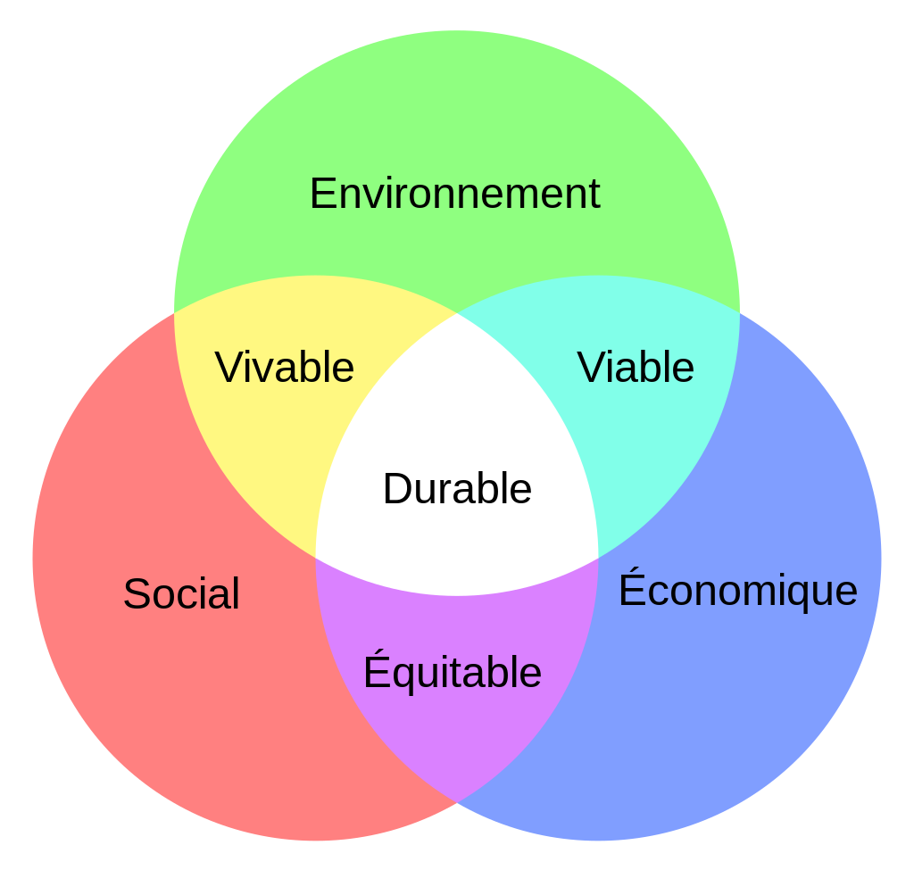

<div class="container">
    <div class="row">
        <h1>Environnement visé</h1>
        <div class="col-md-8">
            <p>Je souhaite travailler dans une entreprise avec une vision de développement
                durable. J'aime les visions à long terme à tous les niveaux.
            </p>
            <p>Je souhaite travailler dans une entreprise avec une vision de développement
                durable. J'aime les visions à long terme à tous les niveaux.
            </p>
            <p><strong>Aspect environnemental: </strong>l'entreprise devra avoir une forte
                sensibilité écologique. Le secteur informatique a un impact fort sur l'environnement,
                en particulier le climat via en particulier ses datacenters et son matériel.
                L'entreprise souhaitée devrait à mon sens en avoir conscience et y tenir compte dans son
                fonctionnement général et pas seulement dans un but marketing de greenwashing.
            </p>
            <p><strong>Aspect social: </strong>l'entreprise devra tenir compte de l'humain, à la
                fois des employés mais aussi des clients. Nous nous trouvons dans un monde inégalitaire.
                Pour contrecarrer les inégalité, les entreprises devraient pouvoir inclure un maximum de profils
                différents et avoir une politique salariale évitant les écarts trop importants. Je comprends très bien
                des écarts selon le travail, les connaissances, études, expérience ou responsabilités mais de manière
                raisonnable. Pour l'aspect des travailleurs, l'entreprise cherchera à une bonne intégration et une bonne
                ambiance.
                Elle tiendra compte des besoins de chacun pour
            </p>
            <p><strong>Aspect économique: </strong>l'entreprise devra chercher à avoir une situation économique viable
                sur le long terme.
                Elle cherchera à s'améliorer et innover pour rester concurrentiel.
            </p>
        </div>
        <div class="col-md-4">
            <!-- Figure doc: https://getbootstrap.com/docs/5.3/content/figures/ -->
            <figure class="figure">
                
                <figcaption class="figure-caption">Diagramme de Venn du développement durable
                    (source: <a
                        href="https://commons.wikimedia.org/wiki/File:Diagramme_de_Venn_du_d%C3%A9veloppement_durable.svg">Wikipédia</a>)
                </figcaption>
            </figure>
        </div>
    </div>
</div>